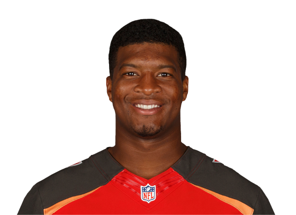

"Jameis Winston (born January 6, 1994) is an American football quarterback for the Tampa Bay Buccaneers of the National Football League (NFL). Born and raised in Alabama, he was a highly regarded quarterback in high school, and led his team to the state championship as a junior. Winston played college football for the Florida State Seminoles and as a Redshirt freshman became the youngest player to win the Heisman Trophy and helped lead the Seminoles to a victory in the 2014 BCS National Championship Game. In his sophomore and final year, the Seminoles advanced to the Rose Bowl, part of the College Football Playoff. Winston also played on Florida State's baseball team. Winston was drafted as the first overall pick by the Buccaneers in the 2015 NFL Draft." -According to Wikipedia.org